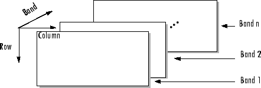

multibandread
Read band-interleaved data from binary file
Syntax
X = multibandread(filename,size,precision,offset,interleave,byteorder)
X = multibandread(...,subset1,subset2,subset3)
Description
X = multibandread(filename,size,precision,offset,interleave,byteorder)
reads band-sequential (BSQ), band-interleaved-by-line (BIL), or band-interleaved-by-pixel
(BIP) data from the binary file filename. The filename
input is specified as a character vector or string scalar. This function defines
band as the third dimension in a 3-D array, as shown in this
figure.

You can use the parameters of multibandread to specify many aspects of
the read operation, such as which bands to read. See Parameters for more information.
X is a 2-D array if only one band is read; otherwise it is 3-D.
X is returned as an array of data type double by
default. Use the precision parameter to map the data to a different data
type.
X = multibandread(...,subset1,subset2,subset3)
reads a subset of the data in the file. You can use up to three subsetting parameters to
specify the data subset along row, column, and band dimensions. See Subsetting Parameters for more information.
Note
In addition to BSQ, BIL, and BIP files, multiband imagery may be stored using the TIFF
file format. In that case, use the imread function to import the
data.
Parameters
This table describes the arguments accepted by multibandread.
Argument | Description |
|---|---|
| Character vector or string scalar containing the name of the file to be read. |
| Three-element vector of integers consisting of
This will be the dimensions of the data if it is read in its entirety. |
| Character vector or string scalar specifying the format of the data to be read, such
as Note: You can also use the
|
| Scalar specifying the zero-based location of the first data element in the file. This value represents the number of bytes from the beginning of the file to where the data begins. |
| Format in which the data is stored, specified as one of these values:
For more information about these interleave methods, see the
|
| Character vector or string scalar specifying the byte ordering (machine format) in which the data is stored, such as
See |
Subsetting Parameters
You can specify up to three subsetting parameters. Each subsetting
parameter is a three-element cell array, {,
wheredim,method,index}
Parameter | Description |
|---|---|
| The dimension to subset along. Specified as any of these values:
|
| The subsetting method. Specified as either of these values:
If you leave out this element of the subset cell
array, |
| If If |
Examples
Version History
Introduced before R2006a
See Also
fread | fwrite | imread | memmapfile | multibandwrite